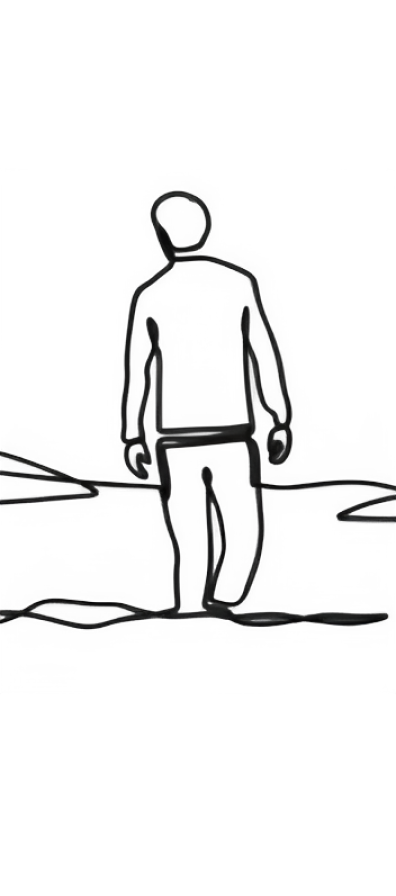
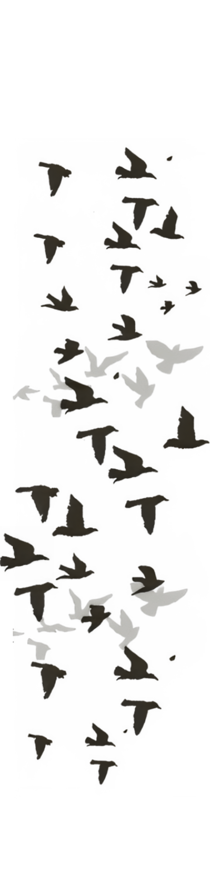

"Take me to the land where I can put on the cloak of silence. Command my feet to saunter its way to the place of peace. Spread your wings and fly me up to the tallest heights—between the heavens and the seas. Bring my fragile heart and wavering mind to the darkest place among the stars and draw maps along the pathways of my scars. Please put me to sleep and cradle me upon the casket of the humongous moon."
A Quest of
Finding Peace
July 2023

I found myself once again wondering and pondering the questions and mysteries of the universe. Its complex divinity brought upon the wildest turbulence that rummages my mind. I found myself once more looking for the uncertainties and settle with what's beyond my understanding.
I posed and pondered, "The waters across the shore pulls its waves back and forth signifying the ocean's indecisiveness. The trees found itself swaying from the challenges upon its firmness amidst the commands of the breath of the wind. Stones remain unturned from the deepest conviction of indifference."
I cleared my mind from the foggy shadows that envelopes and inhibits to resume its wonders and wander. I began to say, "Do not go gentle into that good night and open your eyes and find the light. I shall seek the brightest star in the benign night and I must seek my home into the wuthering height."


I found myself once again wondering and pondering the questions and mysteries of the universe. Its complex divinity brought upon the wildest turbulence that rummages my mind. I found myself once more looking for the uncertainties and settle with what's beyond my understanding.
I chanted the words, "Do not go gentle into that good night, blink once and breathe twice. An image from your mind shall form bright to see colors and scapes in plain sight."
"Every now and then, I would have the sweetest dreams of red and from all the hazy thoughts I float from my bed. Every now and then, I wake upon the universe's voice and I fill my lungs with all the noise."
I so longed for the sweetness and serenity among all and only to find out I can never find peace if I do not create it myself.

indimoc